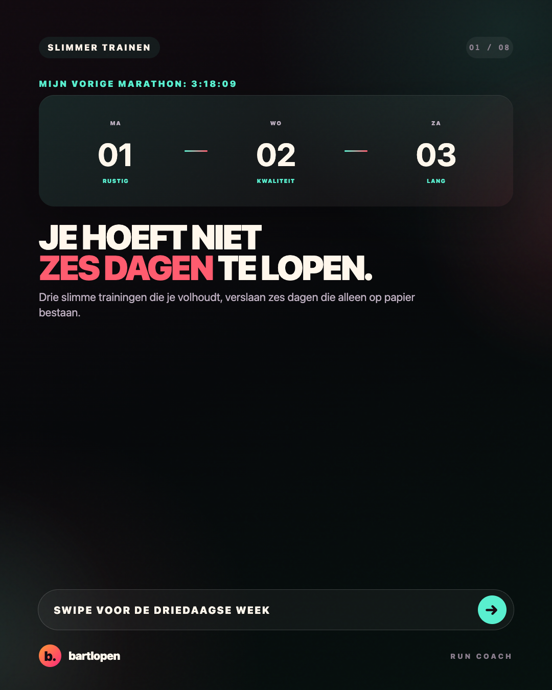
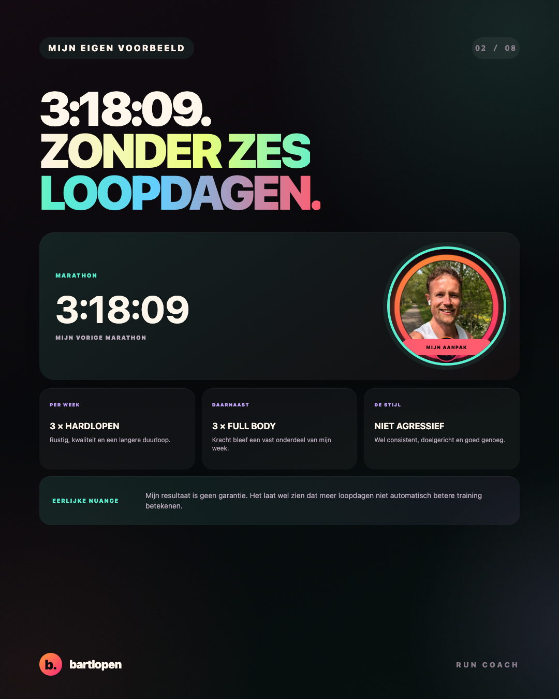
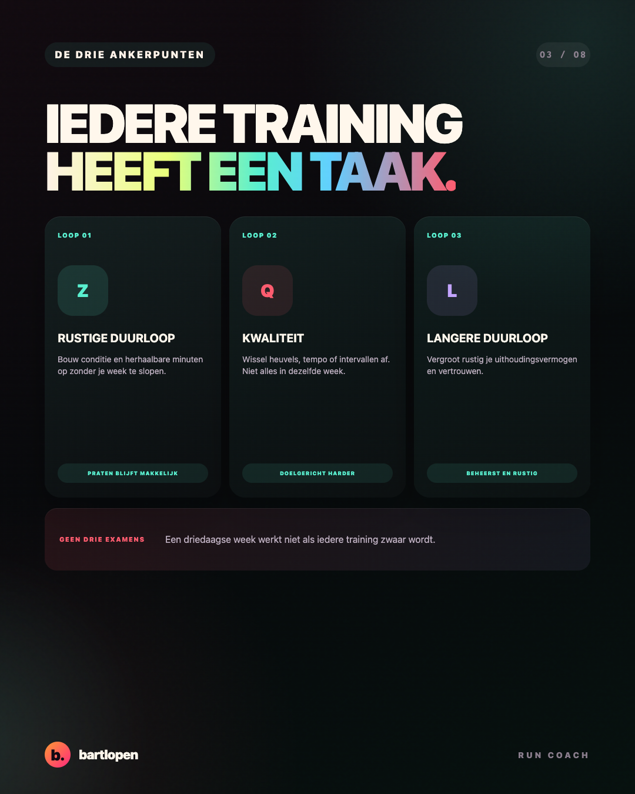
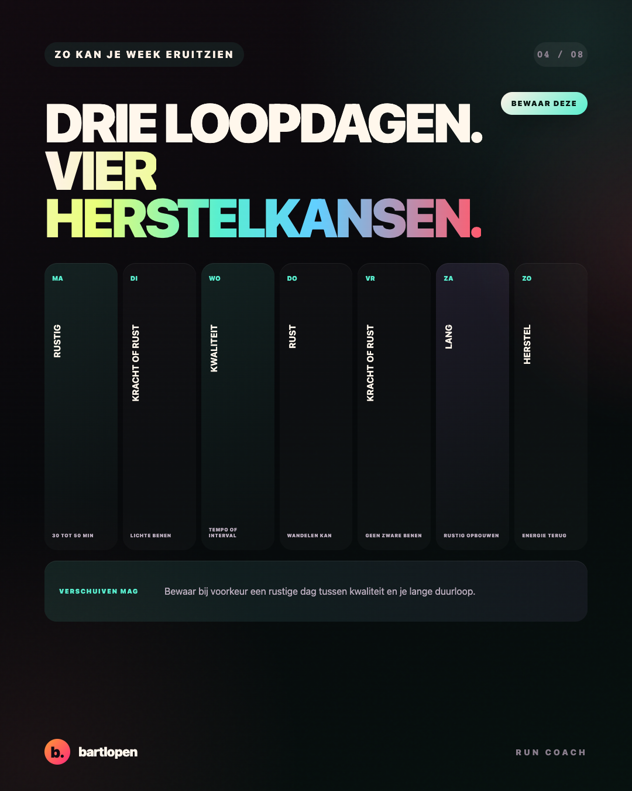
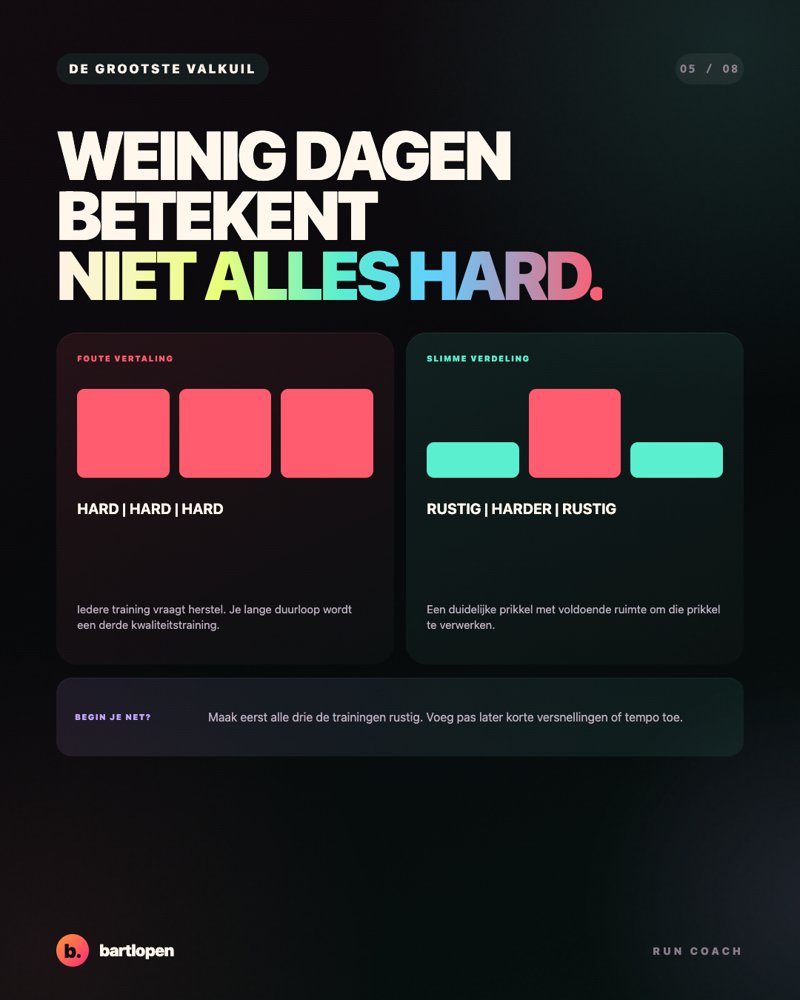
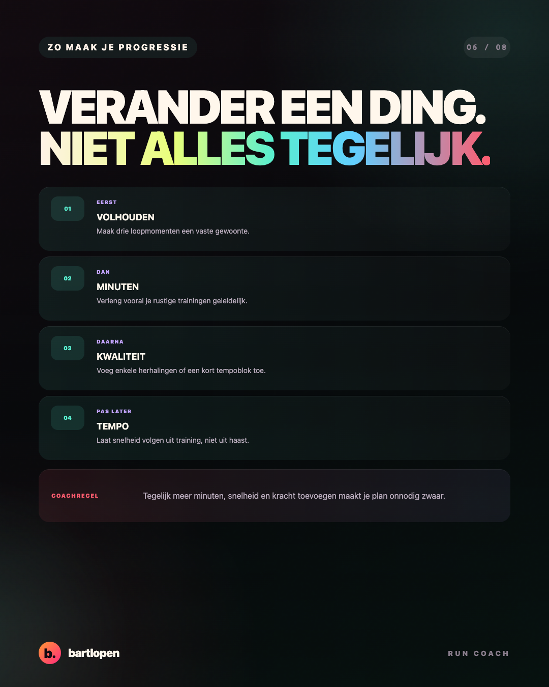
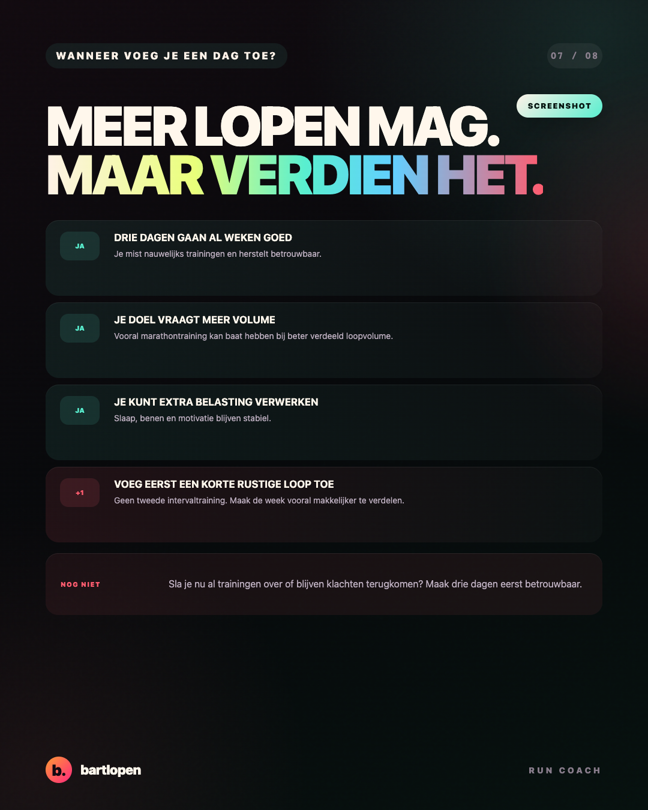
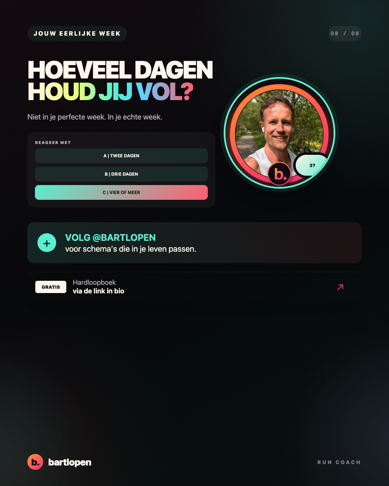

SLIDE 01 ↗Drie keer
per week
Een persoonlijke en praktische serie over hoe Bart 3:18:09 liep met drie looptrainingen en drie full body trainingen per week.

SLIDE 02 ↗
SLIDE 03 ↗
SLIDE 04 ↗
SLIDE 05 ↗
SLIDE 06 ↗
SLIDE 07 ↗
SLIDE 08 ↗Caption
IK LIEP 3:18:09 OP DRIE LOOPDAGEN PER WEEK. 👀 En daarnaast deed ik drie full body trainingen. Mijn marathonvoorbereiding was niet agressief. Ik probeerde niet iedere week zoveel mogelijk kilometers te verzamelen. De aanpak was wel consistent, doelgericht en goed genoeg om 3:18:09 te lopen. Mijn drie ankerpunten: 🏃 een rustige duurloop 🎯 een gerichte kwaliteitstraining 🕒 een langere rustige duurloop Dat betekent niet dat drie loopdagen voor iedereen optimaal zijn. Mijn resultaat is ook geen garantie voor een ander. Voor een marathon, een hoger weekvolume of een zeer ambitieus doel kan een vierde rustige loop nuttig worden. Maar meer dagen zijn niet automatisch beter. Een schema werkt pas als je het kunt uitvoeren, verwerken en wekenlang herhalen. Mijn coachregel: ✅ maak drie dagen eerst betrouwbaar ✅ houd de meeste minuten rustig ✅ verhoog niet tegelijk duur, tempo en kracht ✅ voeg als eerste extra dag een korte rustige loop toe UITDAGING: bouw zes weken rond drie vaste loopmomenten. Kijk daarna pas of je werkelijk een vierde dag nodig hebt. Hoeveel loopdagen houd jij in een echte week goed vol: A twee, B drie of C vier of meer? 👇 #hardlopen #marathontraining #hardloopschema #hybridtraining #krachttraining #runningtips #bartlopen
Bronnen: de driedaagse trainingsaanpak van Furman University, een overzicht van hardloopprogramma's en gezondheidseffecten, een onderzoek naar lagere en hogere trainingsfrequentie en een overzicht naar krachttraining voor afstandslopers.